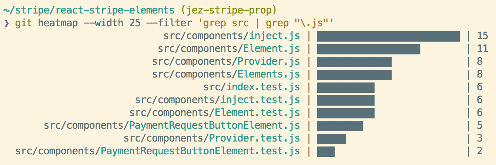

Code Review
Course Link: Programming Foundations: Conducting Code Reviews by Kathryn Hodge
What do code reviewers look for?
- Do the code changes made match what was actually to be done? Is the implementation correct?
- Could there be a more efficient way to complete the task?
- Is the code readable and easy to maintain?
- Does the code break any design patterns/ architectural conventions that are previously established in the code base?
Who should code review?
- Almost everyone from senior to junior developers
- Being a junior developer doesn’t mean you cannot review the code
- Likewise, a code written by a senior member doesn’t guarantee its correctness
Benefits of code review from POV of a junior developer
- Gain understanding of the code base
- Learn how these changes fit in the code base
- Collaboration opportunities
- By being unfamiliar in that area of the code, you provide a unique perspective which may start a discussion with experienced members to uncover other bugs
How many people should review a code?
- Depends on team size, but, at least one person (other than the author) should review the code.
- More people reviewing is better. However, many times different reviewers can be conflicting ideologies making it difficult for author to follow.
- Also, having many people to review takes up too much resources from the team for just one PR.
What code should be reviewed?
- Ideally all code should be reviewed but it depends from team to team
- Some teams could only review intensive/most-important design changes
- Code used only for internal purposes has a lesser urgency than a code which is visible on the client’s end
How long does it take to review code?
- Depends on the number of lines changed
- Ideally you shouldn’t review a code for more than 60 to 90 minutes
- You would have already found out all the defects by 60-90 minutes, however, if you are still uncertain, you can ask other developer to review or meet with the author to discuss changes
- If the number of lines changed are greater than 1000, it is often better to break the submission into multiple commits/PRs for ease of reviewing
- You shouldn’t rush a code review. Reviewing code takes time and it is important but you should manage your own time too.
- You should spend at least 1-2 hours each day reviewing code
Understanding code changes as a reviewer
- You should understand the overall goal of a code change so that the changes do not cause any side effects and do only what they are supposed to do
- If a new functionality is being added, you should understand what it will do, what it will change and what it will not change
- If a bug is being fixed in the code base, you should understand what the bug is, how to re-produce the bug and how does the change solve the bug
- If the author’s intent is not clear from their code changes, you should meet/talk with the author to understand their intent
- You should make suggestions to the author when the code changes do not modify the codebase as expected or if a bug/edge-case/or a functionality is left-out uncovered
- You should use your knowledge of the programming language to review and suggest if a better way exists to accomplish the results
- Does the changes follow coding-styles/coding-standards as per the team/project ? - Tabs or spaces?
snake_case or camelCase? Variable and function names make sense? etc.
Read this naming cheatsheet to get insights on how to name your variables for readability and sensibility.
- You cannot refactor everything all the time, so you need to decide what to approve/prioritize and what can be let go (maybe refactored later or just left)
- Code shouldn’t have to be 100% perfect to be approved but it shouldn’t have severe bugs or issues
- Is the code easy to follow? If other developer has to work on this code, will they be able to follow?
- Has the developer written tests and are the tests testing what they are meant to test?
Maintainability of code
- Does the code changes add new dependencies? Is new dependency required? Does it add more weight/bloat? What if the dependencies are deprecated in the future?
- Does the code change affect a configuration? Configuration changes are usually not tested in automated testing, so we must be cautious if the new configs are really needed.
- Does the change remove backward compatibility? Was it intentional?
- Are there secret-keys/passwords/security vulnerabilities in the code?
- You should be polite in your tone and not accuse the author. Maintaining the quality of the code is a team effort, not one person’s job and we are all bound to make errors.
By simply prefixing the comment with a label, the intention is clear and the tone dramatically changes. – conventionalcomments.org
conventional: comments is a standard for formatting comments […]
Following these comment formating practices convey the reviewer’s intent more clearly and such comments can also be parsed by machine into a standard (example, json) format.
- Instead of “You should do this”, you can write “Can we do this?”
- Include praise/compliments in your comments too
- If there are no review comments, then the reviewer is not doing their job honestly
Checklist before creating a PR
- Let’s say you created a branch
dev from master and commited your code changes into it. Before creating a PR (master <- dev), we must first merge the latest changes from master into dev.
git checkout master
git fetch
git checkout dev
git merge master
This is because it is possible that another PR got merged into master by the time you were implementing the code changes. You should ensure that you are working with the latest changes and when you submit the PR, there should not be any conflicts. However, a conflict can arise when another PR which changed the same file(s) you worked on got merged in master first. You should decide which code blocks to keep and which to remove to resolve the merge conflicts.
Pre-review your own code changes so that the other reviewers can spend more time reviewing the design and implementation and less time on suggesting formatting (code style) changes.
Read about The Queen’s Duck
- While pre-reviewing, be sure to delete any extra comments or extra tests/functionalities added which are not required/used.
It is possible that the code reviewer got frustrated and did not leave gentle comments. In such cases, we should not take those comments as a personal attack on ourselves. We should try to find out what the reviewer is trying to convey and what constructive thing does the reviewer want us to do.
It can sometime feel like you have been working forever on a PR because it is being blocked by some reviewer comments. However, patience is the key and you should be willing to learn.
You can also ask the reviewer to leave comments in the way you want to receive feedback. For example, you can ask reviewer - “It’s easier for me to understand code review comments when they are phrased as questions.”
You should respond to every review comment even if it is as simple as - Done.
Miscellaneous readings
- The Code Review Pyramid – Its intention is to help putting focus on those parts which matter the most during a code review and also which parts could and should be automated –
Gunnar Morling

